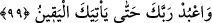

Şerhu’l-Hikem’de der ki: Murâdına nâil olamayıp alışageldikleri durumlarda
karışıklık olunca gönüllerde meydana gelen tasa ve üzüntüler, işin aslını ayan-beyân
görememekten ileri gelir. Çünkü, gerçek fâilin cemâlini görebilmiş olsa, uzaklık tasası
kendisine hoş gelirdi. Tıpkı Yusuf kıssasında ellerini doğrayan o kadınların kıssasında
olduğu gibi.
Hikâye edilir ki bir delikanlıya doksan dokuz kırbaç vuruldu. Fakat ne bağırdı, ne
yardım istedi, ne de ah vah etti. Fakat kırbaç sayısını yüze tamamlayan o tek kırbaç
sırtında şaklayınca, bağırmaya ve yardım istemeye başladı. Durumu gören Şiblî (k.s.)
genci takip edip niçin öyle davrandığını sordu. Genç şöyle dedi: “Kendisi yüzünden
kırbaç yediğim gözler, o doksan dokuz kırbaç boyunca bana bakıyordu. Fakat o gözleri
son kırbaçta gözden kaybettim.”
Şiblî (k.s.): “Allah’ı tanıyanda, ebediyyen gam keder olmaz.” demiştir.
99. Ve sana yakîn (ölüm) gelinceye kadar Rabbine ibâdet et!
“Ve sana yakîn” yâni ölüm “gelinceye kadar Rabbine ibâdet et.” yâni, yapmakta
olduğun ibâdete devâm et. Çünkü onun can taşıyan bütün yaratılmışların başına gelmesi
kesindir. Ölüm geldiği zaman ise hiçbir şek ve şüphe kalmaz.
Ölümün ‘gelme’ fiili ile ifâde edilmesi, onun can sâhiplerine yöneldiğini ve onlara
ulaşmak istediğini bildirmek içindir.
Âyetin mânâsı şöyledir: Canlı olduğun müddetçe, bir an bile ayrılmaksızın, devamlı
olarak O’nun kulu olduğun bilinciyle hareket et. Bu durum, tıpkı Îsâ (a.s.)’ın; ‘O bana,
canlı olduğum sürece namaz ve zekâtı tavsiye etti.’ (Meryem, 19/31) demesine
benzer.
Allah’a kulluk etmek, ölümle sınırlandırılıyor ki, hiç kimse ibâdetin ölüm dışında bir
sonu olduğu vehmine kapılmasın. Öldüğü zaman ise, amel/ibâdet kendisinden ayrılır ve
sevabı bâki kalır. Ancak bu, şerîat mertebesine göredir. Hakîkat mertebesine göre ise
ibâdet, insanın bulunduğu her yerde bâkîdir. Çünkü ibâdet, kalbin hâlidir. Kalb de
melekût âlemindendir. Melekût hallerine ise yokluk ve son bulma ârız olmaz. Allah’tan
kendisine ulaşmayı, her hususta O’na dayanmayı niyâz ederiz.
Bir hadiste şöyle buyrulmuştur: “Bana mal biriktirip tâcirlerden olmam
vahyedilmedi. Fakat bana: “Sen şimdi Rabbini hamd ile tesbîh et ve secde
edenlerden ol! Ve sana yakîn (ölüm) gelinceye kadar Rabbine ibâdet et!” diye
vahyedildi.”[98]
et-Te’vîlâtü’n-Necmiyye’de şöyle denilir: “Onların söyledikleri şeyler yüzünden”
onların, şerlilerin amelini yapmalarına rağmen, hayırlıların sözlerini söylemelerine;
beşerî bir daralmayla, sonsuz bir şefkatle ve eksiksik bir gayretle “senin canının